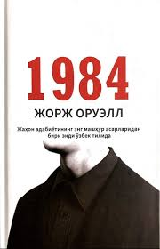
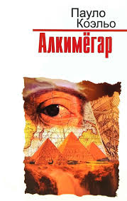
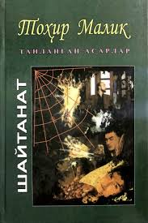

Bilim olamiga onlayn kirish imkoniyati!
Xush kelibsiz! Bilim olamiga yo‘l oching
Bilim olamiga onlayn kirish imkoniyati!
Elektron kutubxona — bu zamonaviy bilim manbai,
unda kitoblar, maqolalar, ilmiy ishlar va multimedia resurslari
bir joyda jamlangan.
Uning asosiy maqsadi — har kim uchun bilimni qulay va tezkor qilish.
Avvallari faqat qog‘oz kitoblar (eski shakl) mavjud bo‘lsa,
hozirda bilim olish uchun faqat bir necha soniya kifoya.
Masalan, fizika formulalarini o‘qishda ham foydali: H2O, E=mc2.
“Elektron kutubxona — bu bilim olamiga tezkor kirish, u orqali cheksiz imkoniyatlar eshigi ochiladi.”<
| № | Rasmi | Kitob nomi | Muallif | Janr | Yili | Havola |
|---|---|---|---|---|---|---|
| 1 |  |
Don Kixot | Migel de Servantes | Roman, Satira | 1605 | Ko‘rish |
| 2 |  |
Usta va Margarita | Mixael Bulgakov | Fantastika, Falsafiy roman | 1966 | Ko‘rish |
| 3 |  |
Urush va Tinchlik | Lev Tolstoy | Tarixiy roman | 1869 | Ko‘rish |
| 4 |  |
Andisha va G‘urur | Jeyn Ostin | Romantik roman | 1813 | Ko‘rish |
| 5 |  | 1984 | Jorj Oruell | Distrofiya, Siyosiy roman | 1949 | Ko‘rish |
| 6 |  | Alkimyogar | Paulo Koelo | Ilhomlantiruvchi, Falsafiy roman | 1988 | Ko‘rish |
| 7 |  |
Harry Potter va Sehrgarlar Toshi | J. K. Rowling | Fantastika | 1997 | Ko‘rish |
| 8 |  |
O‘tkan kunlar | Abdulla Qodiriy | Tarixiy, Romantik roman | 1925 | Ko‘rish |
| 9 |  | Shaytanat | Tohir Malik | Detektiv, Ijtimoiy roman | 1993 | Ko‘rish |
| 10 |  |
Kichkina Shahzoda | Antuan de Sent-Ekzyuperi | Falsafiy ertak | 1943 | Ko‘rish |
| © 2025 Eng mashhur kitoblar — Bilim manbai | ||||||